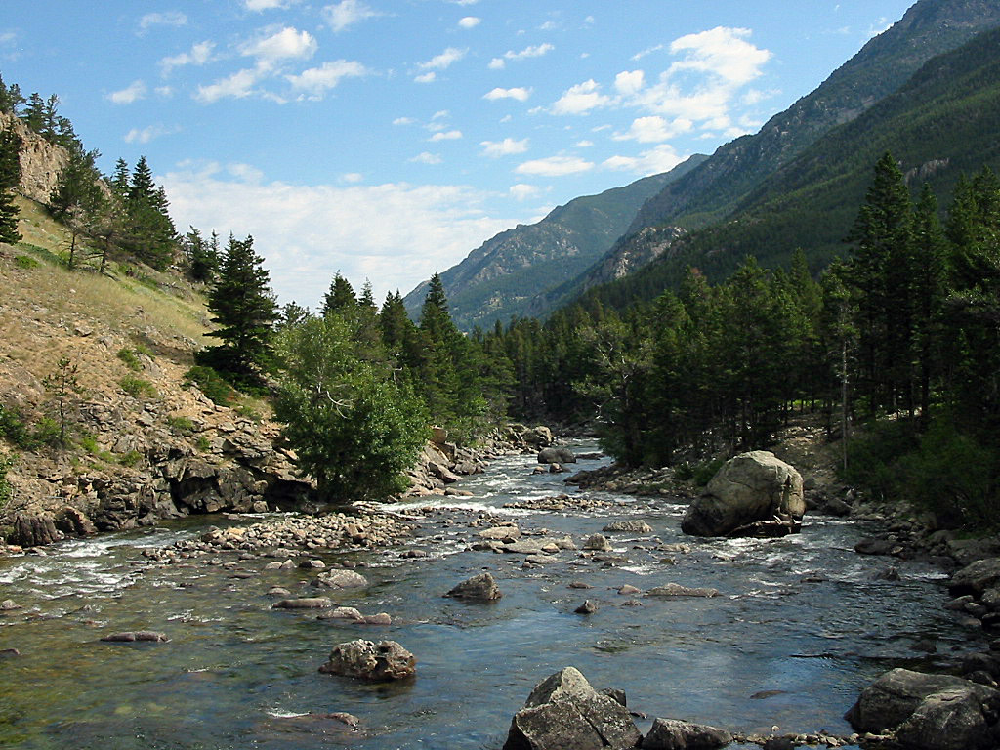
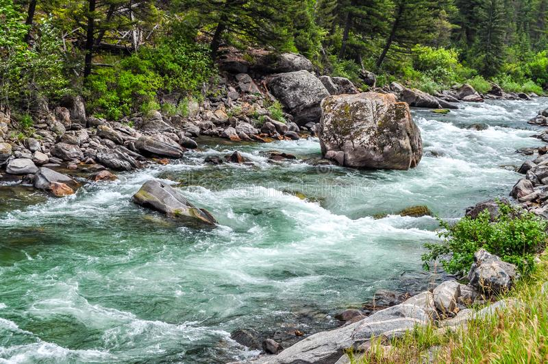
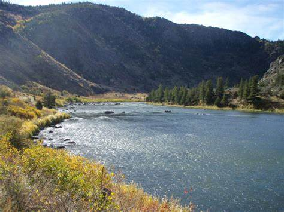

Questions? Contact Us!
Please contact us at any time with questions or comments.
Contact UsAdventure Awaits You!
Stillwater River
Gallatin River
Madison River
| River, Difficulty | |
|---|---|
| Madison River | Mild |
| Clark's Fork River | Mild |
| Yellowstone River | Mild-Medium |
| Stillwater River | Medium |
| Yellowstone River | Mild-Medium |
| Gallatin River | Medium-Wild |
| Salmon River | Medium-Wild |
| Flathead River | Wild |